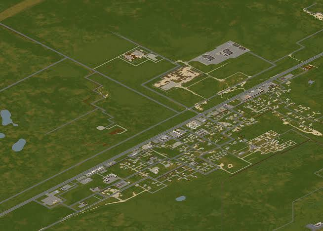

Muldraugh

Cortada por uma grande rodovia; exige cautela ao escolher onde acampar.
História no jogo
Ponto central da crise e a primeira cidade a ser completamente fechada pela operação militar “Knox Event”. Cortada pela rodovia Dixie, tornou-se um cemitério de carros engarrafados quando milhares de moradores tentaram fugir em vão antes do bloqueio do exército.
Dificuldade
Média a alta, pois a cidade é cortada por uma rodovia principal com tráfego intenso de zumbis.
Pontos de interesse
- Delegacia
- Clínica Médica
- Armazéns industriais no norte
- Loja de Livros
- Complexo Florestal isolado no sul
Como sobreviver
- Fique longe da rodovia central nos primeiros dias para não atrair dezenas de zumbis de uma só vez.
- Explore as casas nas ruas internas a leste da rodovia, onde a densidade de inimigos é bem menor.
- Saqueie os grandes armazéns no extremo norte para garantir marretas, geradores e materiais de construção.
- Estabeleça sua base no complexo de casas cercadas no sudeste ou na fazenda isolada ao norte.